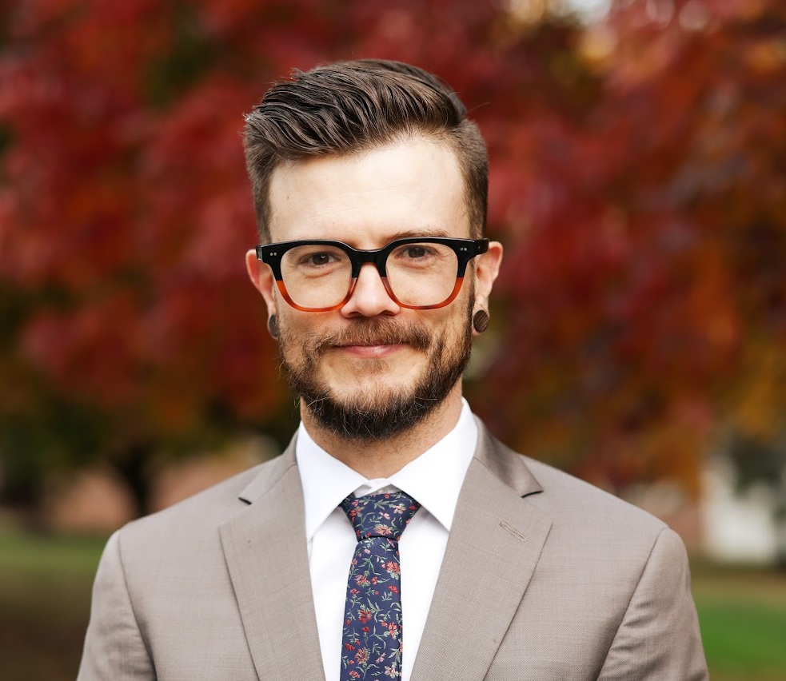

#Digital governance and technical program management for social equity
I am an Affiliate Professor at University of Washington Bothell and University of Calgary, a Fellow of the Royal Canadian Geographic Society, a '23-24 [AAAS Science & Technology Policy Fellow](https://www.aaas.org/programs/science-technology-policy-fellowships), a Global Ambassador for the Global Council for Responsible AI, and an affiliate of the Institute for Trustworthy AI in Law and Society.
I work on AI, data, and technology policy. I work on mixed-methods research and curriculum development. I work on GIS and spatial data science. I work on data, IT, and digital infrastructure projects.
